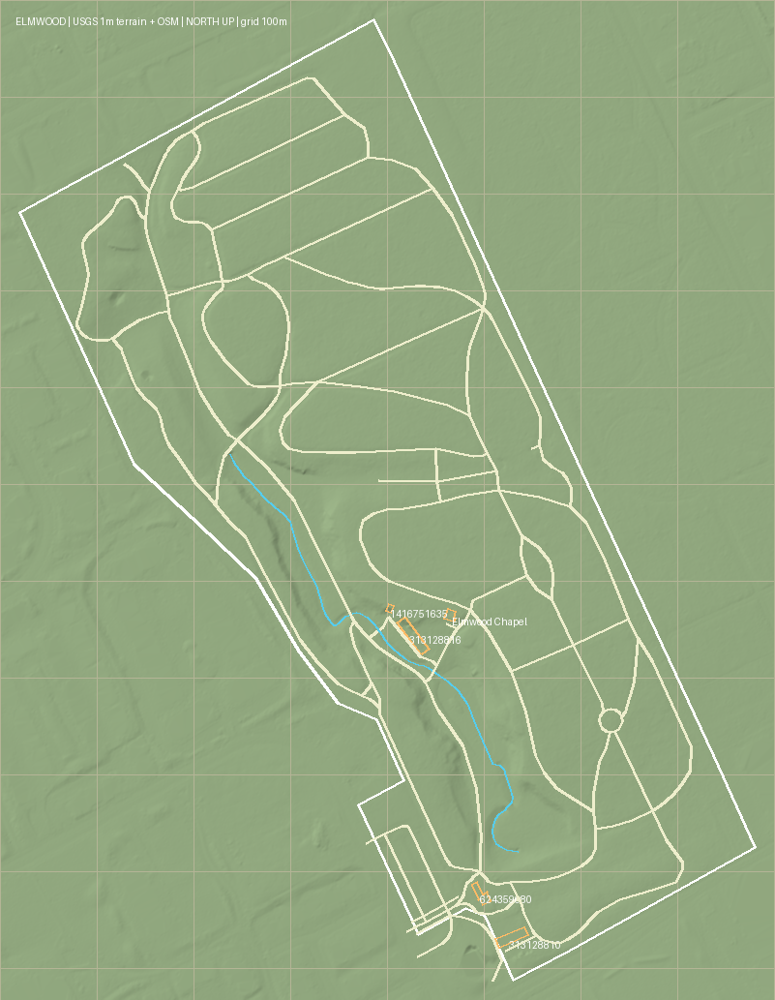
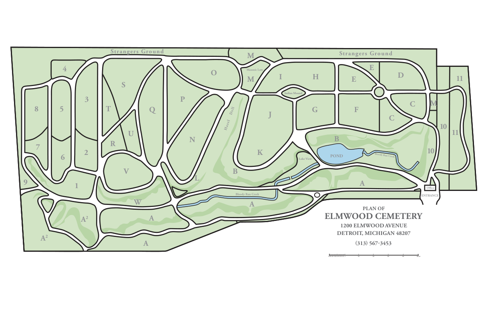

Explore the terrain, architecture, and asset library.
Left: USGS terrain with mapped OSM paths and footprints, north up. Right: cemetery’s official plan. The KML overlay was visually checked in Google Earth against May 9, 2023 satellite imagery. Canopy-covered paths and the missing pond outline remain unresolved; no image-space alignment residual has been measured. Download Google Earth overlay.

